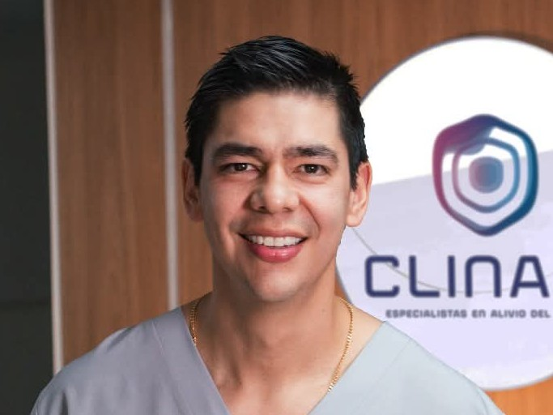
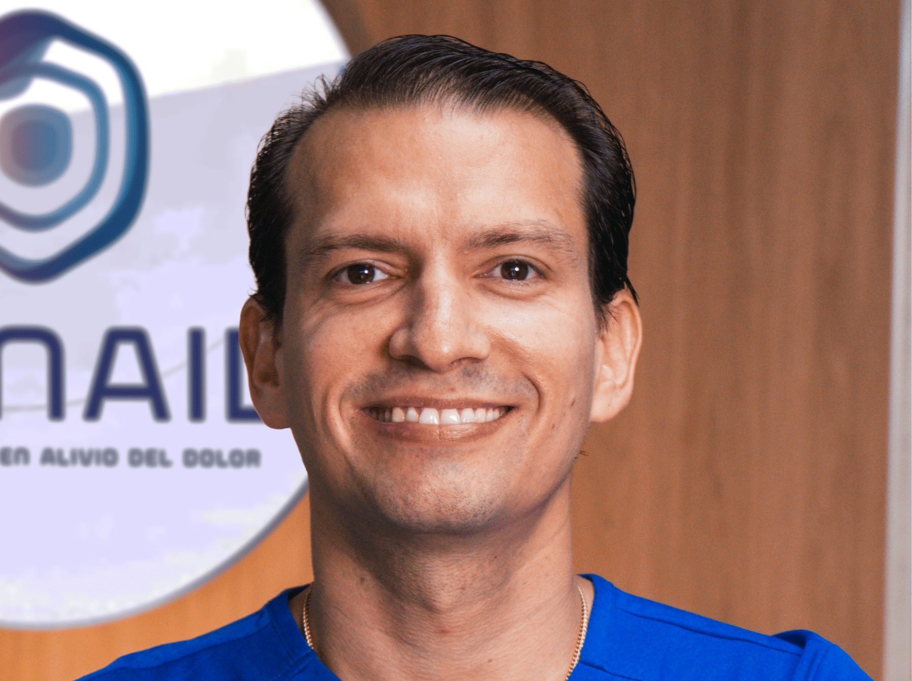
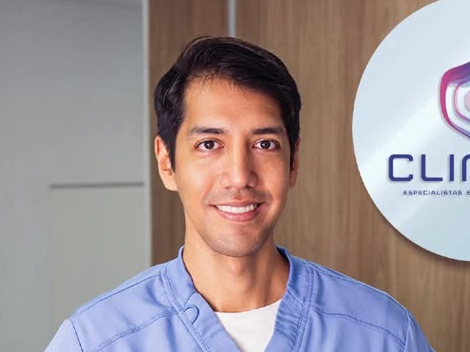

Inicio
Sobre Nosotros
Testimonios
Servicios
Contáctanos
Nuestros Especialistas
Conoce al equipo médico altamente calificado que cuida de tu bienestar
Especialistas a Tu Servicio

José Nicolás Dussan Silva
Especialista Anestesiología y reanimación, Universidad del Rosario
Especialista en Medicina del dolor y cuidado paliativo, Universidad El Bosque
Fellow Interventional Pain Practice - FIPP, WIP
Médico y Cirujano General, Fundación universitaria Juan N Corpas

Felipe Ibagon Durán
Especialista Anestesiología y reanimación Intervencionista
Especialista en Medicina del dolor y cuidado paliativo, Fundación Universitaria Ciencias de la Salud- FUCS
Médico y Cirujano General, Fundación universitaria Juan N Corpas
Shirley Rivera Alvarado
Especialista en Medicina del dolor y cuidados paliativos, Universidad del Rosario
Médica y Cirujana General, Fundación universitaria Juan N Corpas
Diana Lorena Ricardo
Especialista en Medicina del dolor y cuidados paliativos, Universidad del Rosario
Médica General, Universidad del Tolima

Fernan Mauricio Vallejo
Especialista en Medicina del dolor y cuidados paliativos, Universidad del Rosario
Médico General, Universidad del Tolima
Miguel Tovar Torres
Especialista Cirugía de la Mano y Miembro Superior, Hospital Italiano Buenos Aires (ARG), Fundación Universitaria de Ciencias de la Salud FUCS
Especialista en Ortopedia y Traumatología, Universidad El Bosque
Médico Cirujano, Universidad de Caldas